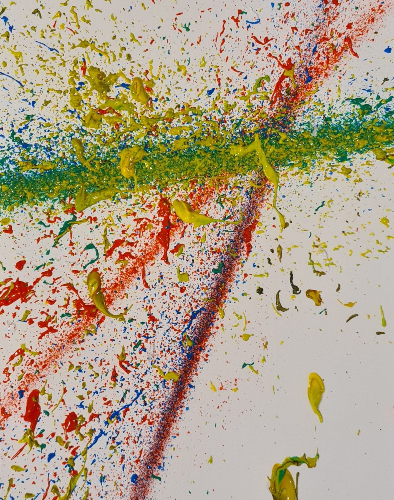

Apparatuz is an installation about randomness, chaos and creation. Built from rough technology, it generates original artworks in real time and lets viewers watch the creative process as it happens.
By exploring the unpredictable, transformative nature of chance, Apparatuz invites reflection on the role of the artist and on how the creative process can be harnessed.
- Year
- 2021
- Medium
- Automatic art-making machine
- Context
- Interactive/Media/Design, KABK